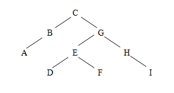
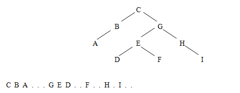
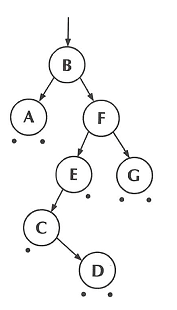
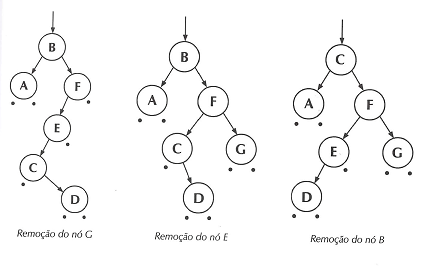

Árvores binárias de pesquisa são árvores binárias nas quais os dados são distribuídos de forma a facilitar a pesquisa de um determinado elemento.
4.4.1 Conceitos Básicos
Para tornar a pesquisa mais eficiente, na árvore binária de pesquisa adota-se a seguinte estratégia para a distribuição dos dados: em qualquer sub-árvore, todos os elementos situados à esquerda da raiz são menores que o elemento da raiz, e todos os situados à direita da raiz são maiores que o da raiz.
Com essa distribuição, a pesquisa de um elemento qualquer fica bem mais eficiente. Em qualquer nível, verifica-se a raiz: se o elemento for menor que o da raiz procura-se na sub-árvore da esquerda, se for maior, procura-se na sub-árvore da direita. Mas nunca é necessário procurar nas duas sub-árvores, como foi feito no algoritmo de procura em árvores binárias comuns, visto anteriormente. Para que esta estratégia seja eficiente é necessário que, em cada nível, a altura da sub-árvore da esquerda não seja muito diferente da altura da sub-árvore da direita. Mas este é um assunto que será tratado no próximo tópico, balanceamento de árvores binárias.
4.4.2 Implementação
Na implementação das árvores binárias de pesquisa utilizaremos a mesma estrutura de dados utilizada para árvores binárias comuns, vista anteriormente:
typedef struct nodo {4.4.3 Algoritmos Básicos
Abaixo são examinados alguns dos algoritmos básicos que utilizam árvores binárias de pesquisa.
a) Construção de uma árvore binária de pesquisa
A construção de uma árvore binária de pesquisa pode ser feita utilizando o mesmo algoritmo visto para a construção de árvores binárias comuns, desde que o arquivo seja previamente preparado. Por exemplo, para a árvore binária utilizada como exemplo anteriormente, o arquivo deveria ser formado do seguinte modo:

b) Procura de um elemento em uma árvore binária de pesquisa
Dada a estratégia de distribuição dos elementos na árvore binária de pesquisa, não é necessário que a procura de um elemento seja recursiva. O ponteiro local a1 não percorre todos os ramos da árvore, mas desce diretamente pelo ramo onde o elemento pode estar. Se estiver presente, a função retorna um ponteiro apontando para ele. Se estiver ausente, a função retorna NULL.
c) Inserção de um elemento em uma árvore binária de pesquisa
Esta função insere o elemento dadonovo na árvore, mantendo a disposição dos dados de forma que a árvore continue a ser binária de pesquisa.
Há uma procura pelo elemento dadonovo na árvore, através da função ProcuraComAnt2, que é uma nova versão da ProcuraComAnt vista anteriormente. Nesta versão, se o dado procurado estiver ausente, o ponteiro *eant não é feito NULL, mas aponta para o nó que seria o pai do nó procurado, se ele estivesse presente. Ou seja, os ponteiros a1 e ant vão descendo pela árvore, sem uso de recursividade, à procura do elemento dadonovo. Se dadonovo não está presente, a função retorna NULL, mas o ponteiro ant fica parado no último nó pesquisado, anterior ao local onde deve ser inserido o dadonovo.
d) Remoção de um elemento de uma árvore binária de pesquisa
A remoção de um nó de uma árvore binária de pesquisa deve ser efetuada com cuidado, para que os nós que permanecem na árvore continuem distribuídos de acordo com a mesma estratégia que permite a pesquisa binária. Para isso, devem ser analisados três casos:
a) O nó a ser retirado é uma folha, isto é, não tem filhos. Neste caso o nó é simplesmente retirado, como por exemplo, o nó G da figura abaixo.
b) O nó a ser retirado tem apenas um filho. Neste caso o nó é retirado e em seu lugar é colocada a raiz da sua única sub-árvore. Na figura abaixo, o nó retirado é o E, cujo lugar vai ser ocupado pelo nó C.
c) O nó a ser retirado tem dois filhos. Neste caso, não se retira o nó desejado, mas altera-se o seu conteúdo. Por exemplo, na figura, se o nó desejado é o B, altera-se o seu conteúdo para o nó seguinte na ordem, que é o C, e em seguida remove-se o nó que continha originalmente o valor C. Para determinar o nó seguinte a outro, caminha-se para a sub-árvore da direita do nó original, e em seguida desce-se sempre à esquerda, até encontrar o nó que não tenha filhos à esquerda.
A função RetiraNo utiliza a função ProcuraComAnt2, que retorna um ponteiro para o nó procurado e informa qual é o nó pai do nó procurado.
A função RetiraNo verifica se o nó procurado tem alguma sub-árvore vazia (essa situação corresponde aos casos a ou b vistos anteriormente, e são resolvidas diretamente). Caso o nó procurado tenha dois filhos, a função RetiraNo executa a operação prevista no caso c, e é usada recursivamente para eliminar o nó correspondente.